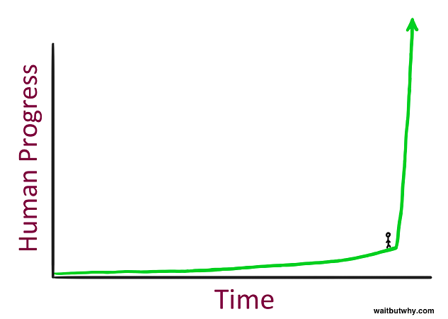
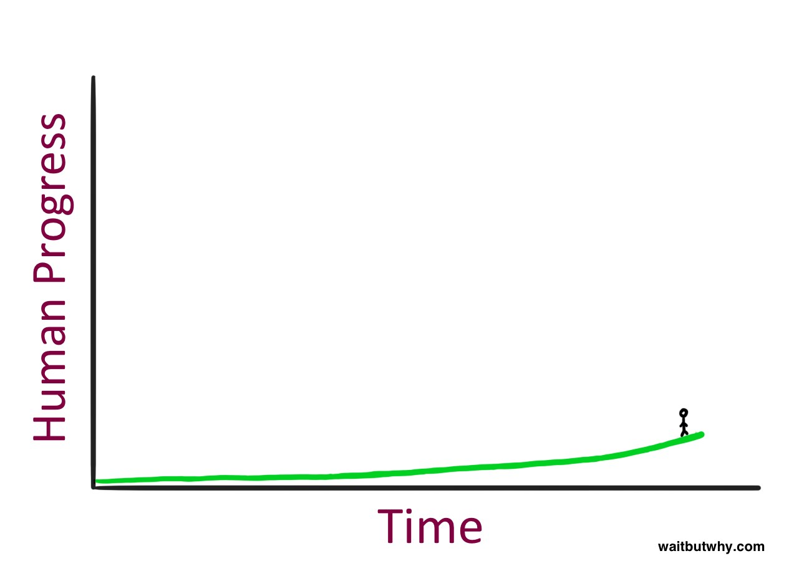

Defeintion of Artificial Intelligance
links:
Artificial intelligence (AI), the ability of a digital computer or computer-controlled robot to perform tasks commonly associated with intelligent beings. The term is frequently applied to the project of developing systems endowed with the intellectual processes characteristic of humans, such as the ability to reason, discover meaning, generalize, or learn from past experience. Since the development of the digital computer in the 1940s, it has been demonstrated that computers can be programmed to carry out very complex tasks
What is intelligence?
All but the simplest human behaviour is ascribed to intelligence, while even the most complicated insect behaviour is never taken as an indication of intelligence. What is the difference? Consider the behaviour of the digger wasp, Sphex ichneumoneus. When the female wasp returns to her burrow with food, she first deposits it on the threshold, checks for intruders inside her burrow, and only then, if the coast is clear, carries her food inside. The real nature of the wasp’s instinctual behaviour is revealed if the food is moved a few inches away from the entrance to her burrow while she is inside: on emerging, she will repeat the whole procedure as often as the food is displaced. Intelligence—conspicuously absent in the case of Sphex—must include the ability to adapt to new circumstances.
The AI Revolution: The Road to Superintelligence
We are on the edge of change comparable to the rise of human life on Earth. — Vernor Vinge
What does it feel like to stand here?

t seems like a pretty intense place to be standing—but then you have to remember something about what it’s like to stand on a time graph: you can’t see what’s to your right. So here’s how it actually feels to stand there:

Link :
The AI Revolution